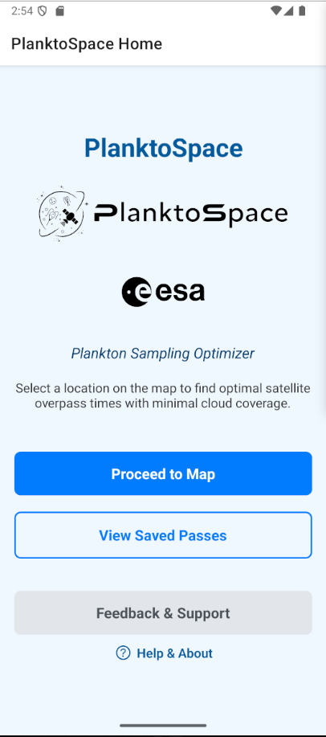
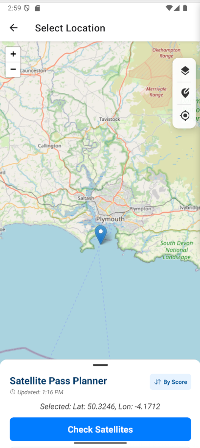
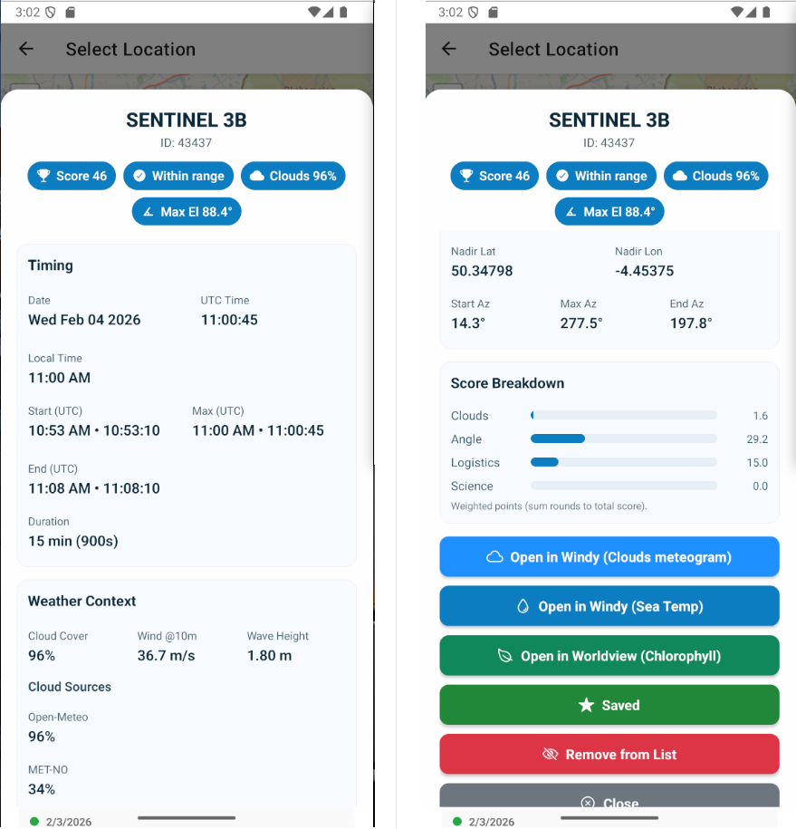

PlanktoSpace is a decision-support tool designed for marine researchers. It ensures that water sampling occurs exactly when an ocean-colour satellite is overhead.
1. The Dashboard & Map
Select your location via the map or snaps tools to begin. Once a location is queried, the data is persisted locally for offline review.
2. Analyzing Opportunities

The system performs real-time fusion of orbital data and weather forecasting, ranking results with an Opportunity Score (0-100).
3. Pass Details & Geometry
Tapping a pass reveals the exact Max Elevation, Azimuth, and Off-Nadir Angle required for mission planning.
4. Managing Data
Field campaigns are dynamic. Curate your schedule, save passes to your local database, and export data as JSON for cruise reports.
Need more technical detail?
For users requiring a deeper understanding of PlanktoSpace. Detailed protocols, environmental context logic, and expert-level configuration guides.
Access In-Depth Manual →
5. FAQ
Q: Why do I see a difference between this app and other trackers?
A: PlanktoSpace calculates Geometric/Radio Passes specifically for daytime optical sensing.